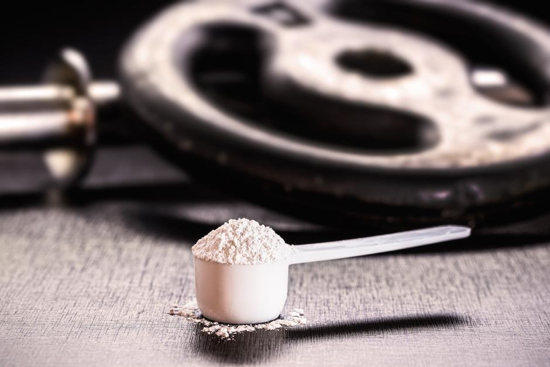
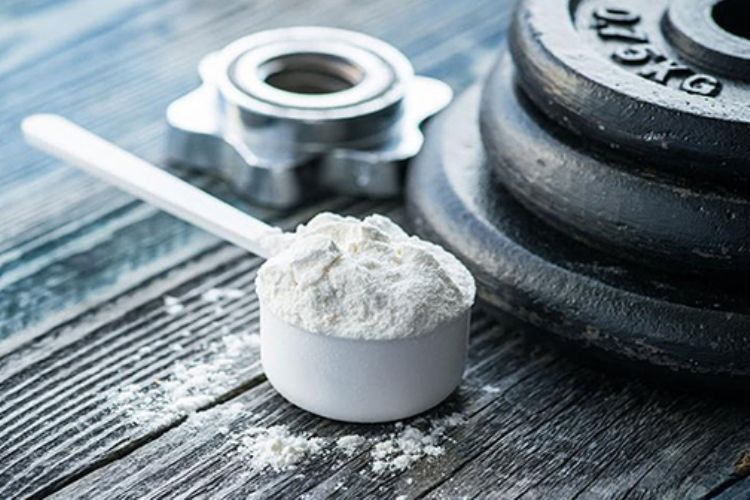
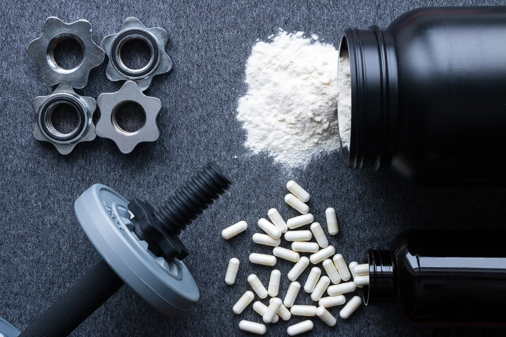

Potencialize seus treinos!

O QUE É CREATINA?
Quem busca o máximo desempenho nos treinos com certeza já deve ter ouvido falar da creatina. Trata-se de um composto químico que tem se tornado sinônimo de melhores resultados no ganho de massa magra. Ela é usada por um grande número de esportistas justamente por trazer muitos benefícios na execução de atividades físicas.
Ela é sintetizada no fígado, nos rins e no pâncreas. A capacidade diária de produção do nosso corpo fica em torno de 1 g por dia durante o período de 24 horas. Sendo a produção endógena limitada, a suplementação com creatina pode oferecer grandes quantidades deste nutriente, influenciando na produção de energia e força para a atividade física.
POR QUE TOMAR CREATINA?
Uma das melhores alternativas é a suplementação com creatina monohidratada da Growth Supplements. Para quem pratica exercícios físicos, especialmente a musculação, a creatina se torna uma das melhores amigas. A maior parte dessa substância está presente na musculatura esquelética do nosso corpo – ou seja, ela se concentra justamente nos músculos exercitados. Os níveis de creatina sofrem influências diversas, desde o preparo físico até a quantidade ingerida na dieta. A quantidade também varia de acordo com a idade e a presença de determinados hormônios.

Adquira sua creatina
CREATINA: AÇÃO NO GANHO MUSCULAR
Creatina é um nutriente envolvido na produção de energia que abastece as células musculares. A suplementação de creatina visa aumentar a capacidade da célula muscular em desempenhar suas funções, ou seja, a suplementação de creatina pode aumentar a força e a capacidade de desenvolver trabalhos físicos. Além disso, a suplementação com creatina pode influenciar a produção de fatores miogênicos regulatórios, aumentando a eficiência de síntese proteica.
BENEFÍCIOS DA CREATINA
Melhora o funcionamento do metabolismo: o uso de creatina torna mais fácil o processo de transformação do açúcar em energia no nosso organismo. O produto melhora o funcionamento do metabolismo, favorecendo a perda de peso e o ganho de massa magra.
Diminuição da fadiga: a fadiga muscular é um dos principais problemas para quem tem a hipertrofia como objetivo. A creatina age combatendo os sintomas de estresse e cansaço, melhorando o desempenho do atleta durante os treinos.

BOM PARA QUAIS OBJETIVOS?
Aumenta a capacidade de trabalho do músculo;
Aumenta a eficiência de síntese proteica;
Aumenta o ganho de massa magra;
Melhora o desempenho de força.
COMO INGERIR A CREATINA?
A creatina deve ser ingerida juntamente com uma refeição, ou com alimentos isolados que estimulem a liberação de insulina pelo pâncreas – alimentos fontes de carboidratos e algumas proteínas por exemplo. Ela pode ser combinada com muitos outros suplementos, e é importante entendermos que a creatina atuará na formação de energia e no aumento de força – isto significa que a capacidade do indivíduo irá aumentar, porém, dependerá de cada indivíduo o bom aproveitamento dos benefícios da creatina.
Indivíduos com treino de força, por exemplo, poderão combinar creatina com beta-alanina, ômega 3, whey protein e outros. Indivíduos com treinos mais longos, estilo endurance, poderão combinar creatina com BCAA, L-carnitina, suplementos de carboidratos, entre outros.